공조냉동기계기사(구) (2009-03-01 기출문제)
1과목: 기계열역학
1. 절대온도가 T1, T2인 두 물체 사이에 열량 Q가 전달될 때 이 두 물체가 이루는 계의 엔트로피 변화는? (단, T1 ＞ T2 이다.)
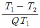
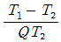
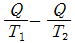
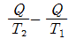
(정답률: 39%)

2. 견고한 밀폐용기 속에 300kPa, 0℃ 인 이상기체가 들어있다. 이 이상기체를 100℃까지 가열하였을 때 증가한 압력은 약 몇 kPa 인가?
- 110
- 260
- 380
- 710
(정답률: 58%)
3. 다음 그림은 순수물질의 압력-온도 선도이다. 옳게 설명한 것은?
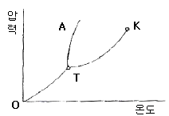
- K는 임계점이고, TA는 융해곡선이다.
- T는 임계점이고, OT는 증발곡선이다.
- K는 임계점이고, TK는 승화곡선이다.
- T는 임계점이고, OT는 승화곡선이다.
(정답률: 47%)
4. 공기 1kg이 50kPa, 3m3인 상태로부터 900kPa, 0.5m3인 상태로 변화할 때 내부에너지 증가가 160kJ이었다. 이 경우 엔탈피 증가는 몇 kJ 인가?
- 30
- 185
- 235
- 460
(정답률: 48%)
5. 순수한 물질로 되어 있는 밀폐계가 단열과정 중에 수행한 일의 절대값에 관련된 설명으로 옳은 것은? (단, 운동에너지와 위치에너지의 변화는 무시한다.)
- 엔탈피의 변화량과 같다.
- 내부 에너지의 변화량과 같다.
- 일의 수행은 있을 수 없다.
- 정압과정에서 이루어진 일의 양과 같다.
(정답률: 64%)
6. 밀폐 시스템이 압력 P1 = 200kPa, 체적 V1 = 0.1m3인 상태에서 P2 = 100kPa, V2 = 0.3m3인 상태까지 가역 팽창되었다. 이 과정이 P-V 선도에서 직선으로 표시된다면 이 과정 동안 시스템이 한 일은 약 몇 kJ 인가?
- 10
- 20
- 30
- 45
(정답률: 56%)
7. 엔탈피 125kJ/kg인 물을 보일러에서 가열하여 엔탈피 2940kJ/kg인 증기를 시간당 10톤을 만든다. 이 증기를 증기터빈에 송압한 후 증기터빈의 출구에서 엔탈피가 2570kJ/kg이 되었다. 이 경우 보일러에서의 가열량은? (단, 보일러에서는 정압가열이며 터빈에서는 단열팽창이다.)
- 3.715×105 kJ/h
- 3.225×106 kJ/h
- 2.815×107 kJ/h
- 2.413×109 kJ/h
(정답률: 58%)
8. 완전단열된 축전지를 전압 5V, 전류 2A로 1시간 동안 충전한다. 축전지를 검사 체적으로 하고 입력 동력과 행한 일은 각각 얼마인가?
- 10W, 36J
- 10W, 36kJ
- 10kW, 36J
- 10kW, 36kJ
(정답률: 59%)
9. 일과 열의 출입이 없는 계에서 비가역과정(irreversible process)이 존재하면 엔트로피는?
- 항상 일정하다.
- 항상 감소한다.
- 항상 증가한다.
- 때로는 증가하고 때로는 감소한다.
(정답률: 63%)
10. 온도가 127℃, 압력이 0.5MPa, 비체적이 0.4m3/kg인 이상기체가 같은 압력하에서 비체적이 0.3m3/kg으로 되었다면 온도는 약 몇 ℃ 인가?
- 16
- 27
- 96
- 300
(정답률: 59%)
11. 100kPa, 20℃의 물을 매시간 3000kg씩 500kPa로 공급하기 위하여 소요되는 펌프의 동력은 약 몇 kW인가? (단, 펌프의 효율은 70%로 물의 비체적은 0.001m3/kg으로 본다.)
- 0.33
- 0.48
- 1.32
- 2.48
(정답률: 40%)
12. 열역학 제2법칙에 대한 설명으로 옳은 것은?
- 과정(process)의 방향성을 제시한다.
- 에너지의 양을 결정한다.
- 에너지의 종류를 판단할 수 있다.
- 공학적 장치의 크기를 알 수 있다.
(정답률: 66%)
13. 두께 10mm, 열전도율 15W/mㆍ℃ 인 금속 판의 두면의 온도가 각각 70℃와 50℃일 때 전열면 1m2당 1분 동안에 전달되는 열량은 몇 kJ인가?
- 1800
- 1400
- 92000
- 162000
(정답률: 70%)
14. 공기 1kg이 압력 101.3kPa, 체적 0.85m3인 상태에서 온도가 300℃인 상태로 변화하였다. 이 과정에서 상승한 온도는? (단, 공기의 기체상수는 0.287kJ/kgㆍk 이다.)
- 273K
- 300K
- 546K
- 573K
(정답률: 58%)
15. 초기의 상태가 300K, 0.5m3인 공기를 등온과정으로 150kPa에서 600kPa까지 천천히 압축하였다. 이 과정에서 공기를 압축하는데 필요한 일 에너지는 약 몇kJ인가?
- 104
- 208
- 304
- 612
(정답률: 54%)
16. 다음 평형상태의 상에 관하여 설명한 것 중 틀린것은? (단, 물의 삼중점은 0.01℃, 0.611kPa이며, 임계점은 374℃, 22MPa이고, 1MPa에서 포화온도는 180℃이다.)
- 0.1℃, 0.001kPa에서 수증기이다.
- -30℃, 0.611kPa에서 고체이다.
- 180℃, 2MPa에서 액체이다.
- 374℃, 25MPa에서 기체이다.
(정답률: 44%)
17. 포화액체와 포화증기의 구분이 없어지는 상태가 물의 경우 고온고압에서 나타난다. 이 상태를 표시하는 점을 무엇이라고 하는가?
- 삼중점
- 포화점
- 임계점
- 비점
(정답률: 74%)
18. 실린더 내에 공기가 3kg 있다. 공기가 200kPa, 10℃인 상태에서 600kPa이 될 때까지 'PV1.3 = 일정'인 과정으로 압축된다. 이 과정에서 공기가 한 일은 약몇 kJ인가? (단, 공기의 기체상수는 0.287kJ/kgㆍK 이다.)
- -285
- -235
- 13
- 125
(정답률: 54%)
19. 다음 중 물질의 양에 따라 변화하는 종량적 상태량은?
- 밀도
- 체적
- 온도
- 압력
(정답률: 68%)
20. 다음 열역학시스템에 대한 설명 중 틀린 것은?
- 주위(surrounding)는 시스템을 포함하지 않는 모두 물질이다.
- 개방계에서 열은 경계를 지날 수 있다.
- 밀폐계에서 물질 및 일은 경계를 지날 수 없다.
- 단열계에서 열은 경계를 지날 수 없다.
(정답률: 52%)
2과목: 냉동공학
21. 냉각수 입구 온도가 32℃, 출구온도기 37℃, 냉각수량이 100l/min 인 수냉식 응축기가 있다. 압축기에 사용되는 동력이 8kW라면 이 냉동 장치의 냉동능력은 약 몇 냉동톤인가?
- 7RT
- 8RT
- 9RT
- 10RT
(정답률: 64%)
22. 다음 사항은 증발기의 구조와 작용에 관한 설명이다. 이 중 옳은 것은?
- 동일 운전상태에서는 만액식 증발기가 건식 증발기 보다 열통과율이 나쁘다.
- 만액식 증발기에서 부하가 커지면 냉매 순환량이 작아진다.
- 건식 증발기는 주로 온도식 팽창밸브와 모세관을 팽창밸브로 사용한다.
- 증발기의 냉각능력은 전열면적이 작을수록 증가한다.
(정답률: 69%)
23. 다음 그림은 T-S선도에 나타낸 냉동사이클이다. 압축일의 열당량을 나타낸 것은?
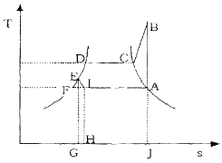
- 면적 A-B-C-D-E-I-A
- 면적 A-B-C-D-E-I-H-J-A
- 면적 A-B-C-D-E-G-H-I-A
- 면적 A-B-C-D-E-F-G-H-I-A
(정답률: 39%)
24. 냉장고 단열벽의 열통과율을 0.24kcal/m2h℃, 고내 온도를 -5℃, 외기온도를 33℃, 단열벽의 면적을 500m2라 하면 이 벽에서 침입하는 열량은 몇 kcal/h인가?
- 4560 kcal/h
- 4350 kcal/h
- 4450 kcal/h
- 4260 kcal/h
(정답률: 68%)
25. 다음 냉동기기에 관한 설명 중 옳은 것은?
- 온도 자동 팽창밸브는 증발기의 온도를 일정하게 유지 제어한다.
- 흡입압력 조정밸브는 압축기의 흡입압력이 설정치 이상이 되지 않도록 제어한다.
- 전자밸브를 설치할 경우 흐름방향을 생각할 필요는 없다.
- 고압축 플로트(float)밸브는 냉매액의 속도로써 제어한다.
(정답률: 67%)
26. 2단 압축 1단팽창 냉동장치에서 각 점의 엔탈피는 다음의 P-h선도와 같다고 할 때 중간냉각기 냉매순환량(kg/h)은 얼마인가? (단, 냉동능력은 20 RT 이다.)
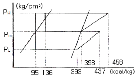
- 68.04
- 85.89
- 222.62
- 290.8
(정답률: 52%)
27. 냉동장치에서 액압축이 일어나기 쉬운 조건이 아닌 것은?
- 팽창밸브의 개도가 과소할 때
- 냉동부하의 급격한 변동이 있을 때
- 운전 정지시에 액관의 밸브를 닫지 않았을 때
- 흡입관의 도중에 트랩 등 윤활유나 액냉매가 고이기 쉬운 부분이 있을 때
(정답률: 57%)
28. 후레온(freon)계 냉매 중 R-22와 R-115의 혼합냉매는?
- R-717
- R-744
- R-500
- R-502
(정답률: 62%)
29. 냉각수량 300ℓ/min, 전일면적 20m2, 냉각수 입구온도 24.5℃, 출구온도 29.5℃, 응축기의 열통과율 750kcal/m2h℃ 일 때 응축온도는?
- 24℃
- 28℃
- 30℃
- 33℃
(정답률: 59%)
30. 모리엘 선도 내 등건조도선의 건조도 0.2는 무엇인가?
- 습증기 중의 건포화 증기 20%(중량비율)
- 습증기 중의 액체인 상태 20%(중량비율)
- 건증기 중의 건포화 증기 20%(중량비율)
- 건증기 중의 액체인 상태 20%(중량비율)
(정답률: 72%)
31. 압축기의 피스톤 링이 현저하게 마모되면 압축기의 작용은 어떻게 되는지 다음 보기에서 옳은 것만 고른 것은?
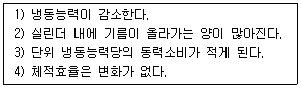
- 1), 3)
- 1), 2)
- 2), 4)
- 3), 4)
(정답률: 72%)
32. 암모니아 냉매를 사용하고 있는 과일 보관용 냉장 창고에서 암모니아가 누설되었을 때 보관 물품의 손상을 방지하기 위한 해결 방법으로 옳지 않은 것은?
- SO2로 중화시킨다.
- CO2로 중화시킨다.
- 환기시킨다.
- 물로 씻는다.
(정답률: 78%)
33. 다음 중 모세관의 압력강하가 가장 큰 경우는?
- 직경이 가늘고 길수록
- 직경이 가늘고 짧을수록
- 직경이 굵고 짧을수록
- 직경이 굵고 길수록
(정답률: 80%)
34. 암모니아 장치에 유분리기를 설치하려 한다. 유분리기를 어느 위치에 설치하면 작용이 양호한가?
- 증발기와 압축기 사이에서 증발기 가까운 쪽
- 증발기와 압축기 사이에서 압축기 가까운 쪽
- 압축기와 응축기 사이에서 응축기 가까운 쪽
- 압축기와 응축기 사이에서 압축기 가까운 쪽
(정답률: 67%)
35. 흡수식 냉동기의 재생기에 사용하는 열원으로 적당하지 않은 것은?
- 증가
- 버너
- 온수
- 냉수
(정답률: 59%)
36. 축열시스템에 대한 설명으로 잘못된 것은?
- 열흐름에 관해서는 축열장치를 경유하는 전량축열과 일부열이 축열장치를 경유하는 부분축열이 있다.
- 열의 공급방법은 축열장치 단독으로 공급하는 방식과 축열장치의 열원장치에서 동시에 공급하는 방식이 있다.
- 축열 시간은 일반적으로 야간에 축열, 주간에 방열 하는 1일 사이클을 많이 사용한다.
- 수축열시스템이란 냉열을 얼음에 저장하는 방법으로 작은 체적에 효율적으로 냉열을 저장하는 방법이다.
(정답률: 71%)
37. 독성이 거의 없고 금속에 대한 부식성이 적어 식품냉동에 사용되는 유기질 브라인(brine)은 다음 중 어느 것인가?
- 프로펠린 글리콜
- 식염수
- 염화칼슘
- 염화마그네슘
(정답률: 84%)
38. 모리엘(P-h)선도상에서 응축온도를 일정하게 하고, 증발온도를 저하시킬 때 발생하는 현상으로 잘못된 것은?
- 소요 동력이 증대한다.
- 압축비가 감소한다.
- 냉동능력이 감소한다.
- 플래쉬 가스 발생량이 증가한다.
(정답률: 72%)
39. 초저온동결에 액체질소를 사용할 때의 장점이라 할 수 없는 것은?
- 동결시간이 단축되어 연속작업이 가능하다.
- 급속동결이 가능하므로 품질이 우수하다.
- 동결건조가 일어나지 않는다.
- 발생되는 질소가스를 다시 사용할 수 있다.
(정답률: 68%)
40. 흡수식 냉동장치를 이용함에 따른 특징이 아닌 것은?
- 초기 운전 시 정격 성능을 발휘할 때까지의 도달속도가 느리다.
- 대기압 이하에서 작동하므로 취급에 위험성이 완화 된다.
- 용액의 부식성이 크므로 기밀성 관리와 부식 억제제의 보충에 엄격한 주의가 필요하다.
- 야간에 열을 저장하였다가 주간의 부하에 대응할 수 있다.
(정답률: 72%)
3과목: 공기조화
41. 어떤 실태에 대한 냉방부하 계산 결과 현열부하 = qs, 잠열부하 = qi, 전부하 = qt 이었다. 실내온도 = tr, 토출공기온도 = td 라 하면 풍량 (Q = m3/h)은 어떻게 구하는가? (단, 공기의 비중량 = γ, 비열 Cp, 비체적 = v 이다.)
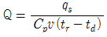
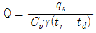
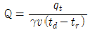
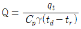
(정답률: 63%)
42. 1000명을 수용하는 극장에서 1인당 CO2 토출량이 15ℓ/hr이면 실태 CO2량을 0.1%로 유지하는데 필요한 환기량은 몇 m3/hr인가? (단, 외기의 CO2량은 0.04%로 한다.)
- 2500
- 25000
- 3000
- 30000
(정답률: 83%)
43. 외기의 건구온도 32℃와 환기의 건구온도 24℃인 공기를 1 : 3의 비율로 혼합하였다. 이 혼합공기의 온도는 몇 ℃인가?
- 26℃
- 28℃
- 29℃
- 30℃
(정답률: 71%)
44. 다음 공조방식 중 전공기(全空氣) 방식이 아닌 것은?
- 각층 유니트 방식
- 2중 덕트 방식
- 단일 덕트 방식
- F.C 유니트 방식
(정답률: 84%)
45. 두께 15cm, 열전도율 λ= 1.4kcal/mh℃인 철근콘크리트의 외벽체에 대한 열관류율 K cal/m2h℃의 값은 얼마인가? (단, 내측 표면 열전달률 αi = 8 kcal/m2h℃, 외측 표면 열전달율 αo = 20 kcal/m2h℃ 이다.)
- 0.1
- 3.5
- 5.9
- 7.6
(정답률: 64%)
46. 다음 공기조화기에 관한 설명 중 옳은 것은?
- 유니트 히터는 가열코일과 팬, 케이싱으로 구성된다.
- 유인 유니트는 팬만을 내장하고 있다.
- 공기 세정기를 사용하는 경우에는 엘리미네이터를 사용하지 않아도 된다.
- 팬코일 유니트는 팬과 코일 및 냉동기로 구성된다.
(정답률: 63%)
47. 보일러의 출력 표시로서 정격출력을 나타내는 것은?
- 난방부하+급탕부하+예열부하-배관 열손실부하
- 난방부하+급탕부하+배관 열손실부하
- 난방부하+배관 열손실부하+예열부하
- 난방부하+급탕부하+배관 열손실부하+예열부하
(정답률: 67%)
48. 덕트 시공도 작성시의 유의사항으로 옳지 않은 것은?
- 덕트의 경로는 될 수 있는 한 최장거리로 한다.
- 소음과 진동을 고려한다.
- 댐퍼의 조작 및 점검이 가능한 위치에 있도록 한다.
- 설치시 작업공간을 확보한다.
(정답률: 79%)
49. 인위적으로 실내 또는 일정한 공간의 공기를 사용 목적에 적합하도록 공기조화하는데 있어서 고려하지 않아도 되는 것은?
- 온도
- 습도
- 색도
- 기류
(정답률: 83%)
50. 다음 제습방법 중에서 -50℃ 정도의 극저온 공기를 얻을 수 있는 방법은?
- 압축식
- 흡수식
- 흡착식
- 냉각식
(정답률: 47%)
51. 다음은 습공기의 성질에 관한 설명이다. 옳지 않은 것은?
- 절대습도는 습공기에 함유되어 있는 수증기와 건공기의 질량비이다.
- 상대습도는 습공기중의 포화증기 밀도에 대한 동일온도에서의 습공기중의 증기의 밀도의 비이다.
- 포화 공기중의 수증기분압은 그 온도의 포화 수증기 압력과 같다.
- 비교습도는 수증기분압과 그 온도에서 있어서의 포화 공기의 수증기 분압과의 비를 말한다.
(정답률: 60%)
52. 유인 유니트 방식에 관한 설명 중 틀린 것은?
- 유인비는 보통 3 ~ 4 정도로 한다.
- 호텔 연회장의 내부 존에 적합한 공조방식이다.
- 덕트 스페이스를 작게 할 수 있다.
- 외기냉방의 효과가 적다.
(정답률: 60%)
53. 외분 연소실의 특징이 아닌 것은?
- 연소실의 크기를 자유롭게 할 수 있다.
- 연소실면의 온도가 높아 저질연료도 연소가 가능하다.
- 복사열 흡수가 크다.
- 설치 면적이 많이 차지한다.
(정답률: 52%)
54. 다음 중에서 공기조화기에 내장된 냉각코일의 통과 풍속으로 가장 적당한 것은?
- 0.5 ~ 1m/s
- 2 ~ 3m/s
- 4 ~ 5m/s
- 7 ~ 9m/s
(정답률: 67%)
55. 에어필터의 설치에 관한 설명으로 틀린 것은?
- 필터는 스페이스가 크므로 공조기 내부에 설치한다.
- 필터는 전풍량을 취급하도록 한다.
- 로울형의 필터로 사용할 때는 필터 전면에 해체와 반출이 용이 하도록 공간을 두어야 한다.
- 병원용 필터를 설치할 때는 프리필터를 고성능필터 뒤에 설치한다.
(정답률: 79%)
56. 다음은 냉난방 부하에 대한 설명이다. 이 중 옳지 않은 것은?
- 열부하 계산은 실내 부하의 상태, 송풍 공기량과 온도, 냉수 및 온수 또는 증기, 냉각수 소요량, 설비기기의 용량, 덕트나 배관의 크기를 구하기 위한 기초가 된다.
- TAC 온도란 외기 설정 온도가 실제 외기 온도 밖으로 벗어날 위험률을 의미하며, 부하 계산시 열원 기기의 용량을 늘리고, 에너지 절약 차원에서 사용한다.
- 최대 난방 부하란 실내에서 발생되는 부하가 1일 중에서 가장 큰 값으로 되는 시각의 부하로서 주로 새벽에 발생된다.
- 공조설비 계획 단계에서 개략 견적을 낼 때 건축 구조도 모르는 경우에는 바닥 면적으로만 열원기기의 용량을 추정할 경우에 열부하의 개산값(단위 면적당 열부하 계수)을 사용하면 유용하다.
(정답률: 49%)
57. 다음에서 온수난방 설비용 기기가 아닌 것은?
- 릴리프 밸브
- 순환펌프
- 관말트랩
- 팽창탱크
(정답률: 66%)
58. 유효온도(effective temperature)에 대한 설명 중 옳은 것은?
- 온도, 습도를 하나로 조합한 상태의 측정온도이다.
- 각기 다른 실내온도에서 습도 및 기류에 따라 실내 환경을 평가하는 척도로 사용된다.
- 실내 환경요소가 인체에 미치는 영향을 같은 감각으로 얻을 수 있는 기류가 정지된 포화상태의 공기온도로 표시한다.
- 유효온도 선도는 복사영향을 무시하며 건구온도 대신에 글로브 온도계의 온도를 사용한다.
(정답률: 62%)
59. 개별난방 방식인 온풍로 난방을 분류하는 방식에 해당되지 않는 것은?
- 가열원
- 통풍방식
- 설치법
- 환기법
(정답률: 48%)
60. 흡수식 냉동장치에 관한 설명 중 맞지 않는 것은?
- 재생기의 가열원으로 증기, 고온수 등이 있다.
- 흡수식냉동기의 가동부분은 작은 펌프뿐이므로 진동∙소음이 없고 전력소비도 감소된다.
- 무단계용량제어가 불가능하다.
- 압축식 냉동기만큼 저온은 불가능하다.
(정답률: 55%)
4과목: 전기제어공학
61. 입력신호 x(t)와 출력신호 y(t)의 관계가
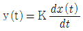
로 표현되는 것을 어떤 요소라 하는가?- 비례요소
- 미분요소
- 적분요소
- 지연요소
(정답률: 65%)
62. 어떤 회로의 유효전력이 80W, 무효전력이 60Var이면 역률은 몇 [%] 인가?
- 20%
- 60%
- 80%
- 100%
(정답률: 54%)
63. 열기전력형 센서에 대한 설명이 아닌 것은?
- 전압 변화용 센서이다.
- 철, 콘스탄틴의 금속을 이용한다.
- 지벡효과(Seebeck effect)를 이용한다.
- 진동 주파수는
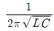
이다.
(정답률: 58%)
64. 그림과 같은 계전기 접점회로의 논리식은?
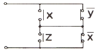
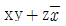
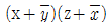
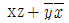
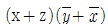
(정답률: 59%)
65. 그림은 릴레이 접점에 의하여 자기유지회로를 구성한 것이다. 이를 논리게이트 회로로 그릴 때 옳은 것은?
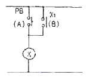
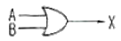
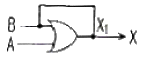
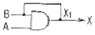
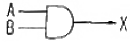
(정답률: 45%)
66. 추치제어에 속하는 제어계는?
- 전동기의 레너드제어
- SCR 전원장치
- 발전소의 주파수제어
- 미사일 유도제어
(정답률: 64%)
67. 그림은 노즐 플래퍼의 동작상태를 나타낸 것이다. 노즐 플래퍼의 특성 곡선으로 알맞은 것은? (단, 노즐 플래퍼의 간격은 δ, 노즐의 배압은 P 이다.)
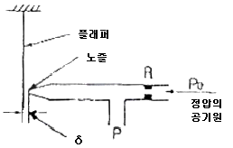
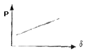
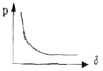
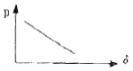
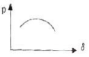
(정답률: 62%)
68. 압력이 011(2)일 때, 출력은 3V인 컴퓨터 제어의 D/A 변환기에서 입력을 101(2)로 하였을 때 출력은 몇[V] 인가? (단, 3 bit 디지털 입력이 011(2)은 off, on, on을 뜻하고 입력과 출력은 비례한다.)
- 3V
- 4V
- 5V
- 6V
(정답률: 58%)
69. 직류기에서 전압정류의 역할을 하는 것은?
- 탄소브러시
- 보상권선
- 리액턴스 코일
- 보극
(정답률: 56%)
70. 다음 중 옴의 법칙에 대한 설명으로 옳지 않은 것은?
- 저항에 전류가 흐를 때, 전압, 전류, 저항의 관계를 설명해 준다.
- 옴의 법칙은 저항으로 전류의 크기를 조절 할 수 있음을 보여준다.
- 옴의 법칙은 저항에 의한 전압강하를 설명해 준다.
- 옴의 법칙을 이용하여 임피던스에 의한 전압강하는 설명할 수 없다.
(정답률: 70%)
71. 단상반파정류로 직류전압 100V를 얻으려고 한다. 최대 역전압(Peak Inverse Voltage : PIV)이 약 몇 [V] 이상인 다이오드를 사용하여야 하는가?
- 100V
- 141.1V
- 222V
- 314V
(정답률: 30%)
72. 다음 중 엘리베이터에 적용하는 유도전동기에 인가되는 전압과 주파수를 동시에 변환시키는 제어방식은?
- 교류1단 속도제어방식
- 교류2단 속도제어방식
- VVVF 제어방식
- 교류 궤환제어방식
(정답률: 65%)
73. 그림에서 단자전압 Vab는 몇 [V] 인가?
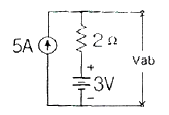
- 3V
- 7V
- 10V
- 13V
(정답률: 47%)
74. 콘덴서의 정전용량을 변화시켜서 발진기의 주파수를 1kHz로 하고자 한다. 이 때 발진기는 자동제어 용어 중 어느 것에 해당되는가?
- 목표값
- 조작량
- 제어량
- 제어대상
(정답률: 48%)
75. 대부분의 시간 지연은 시스템의 무엇 때문에 발생하는가?
- 전파 지연
- 정밀도
- 전달함수
- 오버슈트
(정답률: 53%)
76. 유압식 변압기의 절연유 구비조건이 아닌 것은?
- 절연내력이 클 것
- 응고점이 높을 것
- 점도가 낮고 냉각효과가 클 것
- 인화점이 높을 것
(정답률: 61%)
77. 단상유도전동기에서 기동토크의 순서가 옳은 것은?
- 반발기동형 ＜ 반발유도형 ＜ 콘덴서전동기 ＜ 분상기동형 ＜ 세이딩코일형
- 세이딩코일형 ＜ 분상기동형 ＜ 콘덴서전동기 ＜ 반발유도형 ＜ 반발기동형
- 반발유도형 ＜ 반발기동형 ＜ 콘덴서전동기 ＜ 세이딩코일형 ＜ 분상기동형
- 분상기동형 ＜ 세이딩코일형 ＜ 콘덴서전동기 ＜ 반발기동형 ＜ 반발유도형
(정답률: 50%)
78. 다음 설명은 어느 자성체를 표현한 것인가?
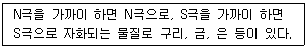
- 강 자성체
- 상 자성체
- 반 자성체
- 초강 자성체
(정답률: 65%)
79. 온도를 임피던스로 변환시키는 요소는?
- 측온 저항
- 광전지
- 광전 다이오드
- 전자석
(정답률: 65%)
80. 방 안의 온도를 배출열량의 제어가 가능한 히터로 제어하고자 한다. 이러한 제어계를 간단하게 블록선도로 그리면 다음 같이 되는데 이 때, A지점에 들어갈 가장 적당한 것은?
- 외부온도
- 외부에 빼앗긴 열량
- 조작량
- 온도오차
(정답률: 25%)
5과목: 배관일반
81. 다음은 증기난방 배관에서 증발탱크(flash tank)에 대한 설명이다. 틀리게 설명한 것은?
- 저압증기의 압력을 감소시켜 원만한 증기 공급을 한다.
- 고압증기 난방배관에서 재증발 증기가 많을 때 사용한다.
- 저압증기 환수관의 압력이 높아져 증기트랩의 능력이 저하되므로 이를 방지한다.
- 고압증기의 응축수를 저압하에서 재증발시켜 증기를 재사용하게 한다.
(정답률: 29%)
82. 배수 트랩의 구비조건으로 합당하지 않은 것은?
- 내식성이 클 것
- 봉수가 유실되지 않는 구조일 것
- 구조가 간단할 것
- 오물이 트랩에 부착될 수 있는 구조일 것
(정답률: 63%)
83. 증기배관에 관한 설명으로 틀린 것은?
- 수평주관의 지름을 줄일 때에는 편심 리듀서를 사용한다.
- 수평주관의 지름을 줄일 때에는 응축수가 이음부에 체류하지 않도록 내림구배는 관 밑을 직선으로 일치시킨다.
- 증기주관 위쪽에서의 입하관 분기는 상향으로 올린 후에 올림구배로 입하시킨다.
- 증기관이나 환수관이 장애물과 교차할 때는 드레인이나 공기가 유통하기 쉽도록 한다.
(정답률: 48%)
84. 기수혼합식(氣水混合式)급탕 설비에서 일반적으로 사용하고 있는 스팀 시일렌서(steam silencer)의 역할은?
- 증기관내에 발생된 공기를 배출한다.
- 급탕설비의 효율을 증가시킨다.
- 배관내의 이물질을 제거한다.
- 소음을 방지한다.
(정답률: 72%)
85. 긴 직선배관일 경우 강관 신축 이음은 몇 m마다 설치하는 것이 좋은가?
- 5m
- 10m
- 30m
- 50m
(정답률: 43%)
86. 공기 가열기, 열 교환기등 다량의 응축수를 처리하는데 적합하며, 작동원리에 따라 다량트랩, 부자형 트랩으로 구분하는 트랩은?
- 벨로즈 트랩
- 바이메탈 트랩
- 플로트 트랩
- 벨 트랩
(정답률: 57%)
87. 급탕 배관 시공상 주의사항으로 옳지 않은 것은?
- 상향식 공급 방식에서 급탕 수평 주관은 선상향 구배로 한다.
- 하향식 공급 방식에서는 급탕관은 선상향 구배로 한다.
- 상향식 공급 방식에서 복귀관은 선하향 구배로 한다.
- 하향식 공급 방식에서는 복귀관은 선하향 구배로 한다.
(정답률: 41%)
88. 압력 배관용 탄소강관의 두께를 나타내는 스케줄번호(Sch No)에 관한 설명으로 잘못된 것은? (단, P는 사용압력 MPa, S는 허용응력 N/mm2 이다.)
- 관의 두께를 나타내는 계산식
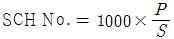
이다. - 스케줄번호는 10, 20, 30, 40, 60, 80 등이 있다.
- 스케줄번호가 커질수록 관의 두께가 두꺼워진다.
- 허용응력은 안전율을 인장강도로 나눈 값이다.
(정답률: 48%)
89. 동관 접합의 종류가 아닌 것은?
- 납땜 접합
- 용접 접합
- 나사 접합
- 플래어 접합
(정답률: 54%)
90. 도시가스 배관을 시가지의 도로 노면 밑에 매설하는 경우에는 노면으로부터 배관의 외면까지 몇 m 이상을 유지해야 하는가?
- 1
- 1.2
- 1.5
- 2
(정답률: 48%)
91. 전기가 정전되어도 계속하여 급수를 할 수 있으며 급수 오염 가능성이 적은 방식은?
- 압력탱크 방식
- 수도직결 방식
- 부스터 방식
- 고가탱크 방식
(정답률: 60%)
92. 배수배관에서는 관이 막혔을 때 이것을 점검, 수리하기 위해 청소구를 필요로 한다. 청소구 설치 장소로 옳지 않은 것은?
- 배수 수평 주관과 배수 수평 분기관의 분기점에 설치
- 배수관이 45° 이상의 각도로 방향을 전환하는 곳에 설치
- 길이가 긴 수평 배수관인 경우 관경이 100A 이하일 때 5m 마다 설치
- 배수 수직관의 제일 밑부분에 설치
(정답률: 52%)
93. 프레온 냉동장치 냉매 배관 설계시 옳지 않은 것은?
- 지나친 압력강하를 방지한다.
- 트랩(trap)반경은 되도록 크게 한다.
- 정지시 압축기로의 액냉매의 유입을 방지한다.
- 압축기를 떠난 윤활유가 다시 압축기로 일정비율로 되돌아오게 한다.
(정답률: 49%)
94. 다음은 급수배관 방식에 대한 설명이다. 틀린 것은?
- 상향급수 배관 방식에서 상향수직관은 상층으로 올라갈수록 관경을 작게 한다.
- 하향급수 배관방식은 옥상탱크식의 경우에 흔히 사용되는 배관법으로 급수압이 일정하다.
- 상⋅하향 혼용배관 방식은 1, 2층 상향식, 3층이상은 하향식으로 한다.
- 상향급수 배관방식은 수평주관이 지하층 천정에 노출 배관되므로 점검, 보수가 용이하다.
(정답률: 47%)
95. 압축기로부터 응축기에 이르는 배관 설치에 있어서 주의할 사항으로 잘못된 것은?
- 배관이 합류될 때는 T자형 보다 Y자형으로 하는 것이 좋다.
- 압축기로부터 올라온 토출관이 응축기에 연결되는 수평부분은 응축기쪽으로 하향 구배를 한다.
- 2대의 압축기가 아래쪽에 있고 1대의 응축기가 위쪽에 있는 경우 토출가스 헤더는 압축기 위에 배관하여 토출가스관에 연결한다.
- 압축기와 응축기가 각각 2대 이상인 경우 압축기의 크랭크 케이스 균압관을 수평으로 배관한다.
(정답률: 30%)
96. 냉동 배관시 플렉시블 조인트의 설치에 관한 설명으로 틀린 것은?
- 가급적 압축기 가까이에 설치한다.
- 압축기의 진동방향에 대하여 직각으로 설치한다.
- 압축기가 가동할 때 무리한 힘이 가해지지 않도록 설치한다.
- 기계⋅구조물 등과 견고하게 접촉되도록 설치한다.
(정답률: 57%)
97. 배관의 하중을 위에서 걸어 당겨 지지하는 행거(Hanger)중 상하 방향의 변위가 없는 개소에 사용하는 것은?
- 콘스탄트 행거(constant hanger)
- 리지드 행거(rigid hanger)
- 버리어블 행거(variable hanger)
- 스프링 행거(spring hanger)
(정답률: 55%)
98. 다음 중 유체의 종류가 냉동기 유(油)을 표시하는 문자는?
- G
- A
- O
- V
(정답률: 59%)
99. 도기가스 배관 설치에 관한 내용으로 틀린 것은?
- 가스배관을 지상에 설치할 경우에는 황색으로 표시한다.
- 중압 가스배관을 매설할 경우에는 적색으로 표시한다.
- 배관을 지하에 매설하는 경우에는 배관이 매설되어 있음을 표시한다.
- 배관을 지하에 매설하는 경우에는 사용 가스명을 표시하지 않아도 된다.
(정답률: 62%)
100. 공조배관 설계시 유속을 빠르게 했을 경우 발생되지 않는 것은?
- 관경이 적어진다.
- 운전비가 감소한다.
- 소음이 발생된다.
- 마찰손실이 증대한다.
(정답률: 56%)